Last updated: 2020-10-06
Checks: 6 1
Knit directory: LPMP_LHF_C/
This reproducible R Markdown analysis was created with workflowr (version 1.6.2). The Checks tab describes the reproducibility checks that were applied when the results were created. The Past versions tab lists the development history.
The R Markdown is untracked by Git. To know which version of the R Markdown file created these results, you’ll want to first commit it to the Git repo. If you’re still working on the analysis, you can ignore this warning. When you’re finished, you can run wflow_publish to commit the R Markdown file and build the HTML.
Great job! The global environment was empty. Objects defined in the global environment can affect the analysis in your R Markdown file in unknown ways. For reproduciblity it’s best to always run the code in an empty environment.
The command set.seed(52694887) was run prior to running the code in the R Markdown file. Setting a seed ensures that any results that rely on randomness, e.g. subsampling or permutations, are reproducible.
Great job! Recording the operating system, R version, and package versions is critical for reproducibility.
Nice! There were no cached chunks for this analysis, so you can be confident that you successfully produced the results during this run.
Great job! Using relative paths to the files within your workflowr project makes it easier to run your code on other machines.
Great! You are using Git for version control. Tracking code development and connecting the code version to the results is critical for reproducibility.
The results in this page were generated with repository version 2724555. See the Past versions tab to see a history of the changes made to the R Markdown and HTML files.
Note that you need to be careful to ensure that all relevant files for the analysis have been committed to Git prior to generating the results (you can use wflow_publish or wflow_git_commit). workflowr only checks the R Markdown file, but you know if there are other scripts or data files that it depends on. Below is the status of the Git repository when the results were generated:
Ignored files:
Ignored: .DS_Store
Ignored: .Rhistory
Ignored: .Rproj.user/
Untracked files:
Untracked: _workflowr.R
Untracked: _workflowr.sh
Untracked: analysis/01-quality-control.Rmd
Untracked: analysis/02-normalization.Rmd
Untracked: analysis/03-feature-selection.Rmd
Untracked: analysis/04-reduced-dimensions.Rmd
Untracked: analysis/05-clustering.Rmd
Untracked: analysis/06-doublet-detection.Rmd
Untracked: analysis/07-cell-cycle.Rmd
Untracked: analysis/08-marker-detection.Rmd
Untracked: analysis/09-cell-annotation.Rmd
Untracked: analysis/10-atlas-integration.Rmd
Untracked: analysis/11-atlas-neighbors.Rmd
Untracked: analysis/12-atlas-trajectory.Rmd
Untracked: analysis/13-atlas-clustering.Rmd
Untracked: analysis/Untitled.Rmd
Untracked: analysis/cache/
Untracked: analysis/geneset-activity.Rmd
Untracked: analysis/haystack-analysis.Rmd
Untracked: analysis/scenic-analysis.Rmd
Untracked: code/reorder_within.R
Untracked: data/cell-lineage.csv
Untracked: data/gene-sets.csv
Untracked: data/hello.txt
Untracked: data/pyscenic-activity.csv
Untracked: data/pyscenic-modules.csv
Untracked: data/pyscenic-regulons.csv
Untracked: data/salmon-quant.rds
Untracked: output/01-quality-control.rds
Untracked: output/02-normalization.rds
Untracked: output/03-feature-selection.rds
Untracked: output/04-reduced-dimensions.rds
Untracked: output/05-clustering.rds
Untracked: output/06-doublet-detection.rds
Untracked: output/07-cell-cycle.rds
Untracked: output/08-marker-detection.rds
Untracked: output/09-cell-annotation.rds
Untracked: output/10-atlas-integration.rds
Untracked: output/11-atlas-neighbors.rds
Unstaged changes:
Modified: _workflowr.yml
Modified: analysis/_site.yml
Modified: analysis/about.Rmd
Modified: analysis/index.Rmd
Modified: analysis/license.Rmd
Note that any generated files, e.g. HTML, png, CSS, etc., are not included in this status report because it is ok for generated content to have uncommitted changes.
There are no past versions. Publish this analysis with wflow_publish() to start tracking its development.
Setup chunk options:
knitr::opts_chunk$set(
autodep = TRUE,
cache = TRUE,
cache.path = "cache/12-atlas-trajectory.Rmd/",
dev = "png",
error = FALSE,
message = FALSE,
warning = FALSE,
fig.align = "center",
out.width = '100%'
)Load Bioconductor packages:
library(MouseGastrulationData)
library(scater)
library(scran)
library(slingshot)
library(tradeSeq)Load CRAN packages:
library(bigmemory)
library(ggforce)
library(ggthemes)
library(pheatmap)
library(RColorBrewer)Source convienence functions:
source("code/reorder_within.R")Read experiment object:
sce <- readRDS("output/11-atlas-neighbors.rds")Remove cells not known to be present in the data:
nan <- c("NMP", "PGC", "Surface ectoderm")
sce <- sce[, !sce$celltype %in% nan]Produce a diffusion map for the cells:
set.seed(385008972)
sce <- runDiffusionMap(sce, dimred = "corrected")Define annotation labels for visualisation:
source.labels <- c("reference" = "Mouse Embryo Atlas", "test" = "Mouse LPMP LHF")Plot DiffusionMap of cells coloured by source data:
ggcells(sce, aes(DiffusionMap.1, DiffusionMap.2, colour = source)) +
geom_point() +
scale_colour_tableau(name = "Source", labels = source.labels, palette = "Tableau 10") +
labs(x = "DC1", y = "DC2") +
theme_bw() + theme(aspect.ratio = 1)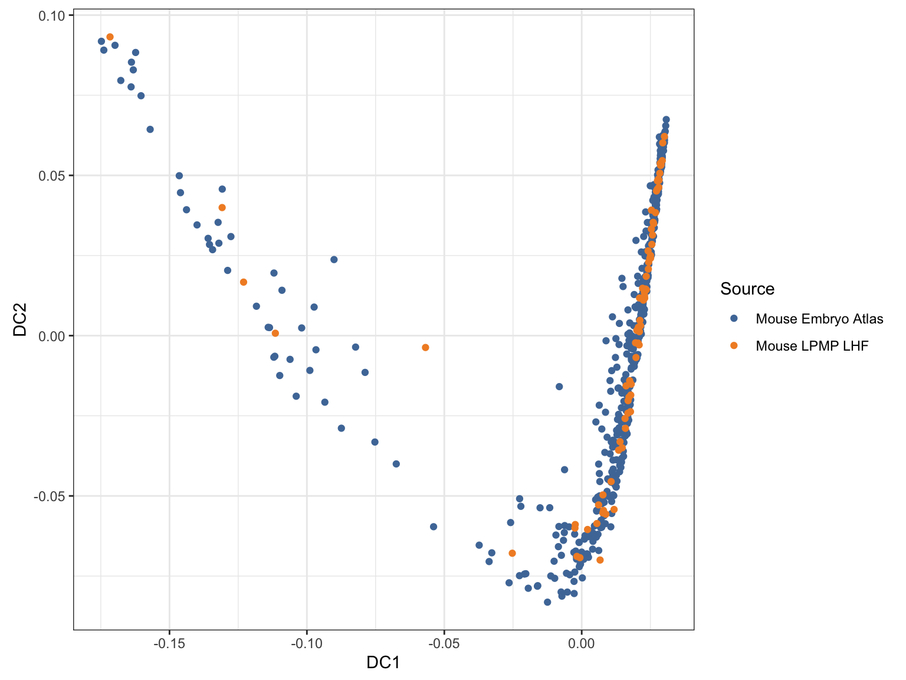
Plot DiffusionMap of cells coloured by embryonic stage:
ggcells(sce, aes(DiffusionMap.1, DiffusionMap.2, colour = stage)) +
geom_point() +
scale_colour_tableau(name = "Stage", palette = "Tableau 10", na.value = "#000000") +
labs(x = "DC1", y = "DC2") +
facet_wrap(~ source, labeller = labeller(source = source.labels)) +
theme_bw() + theme(aspect.ratio = 1)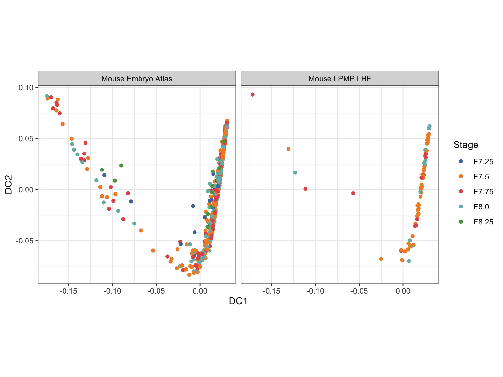
Plot DiffusionMap of cells coloured by celltype annotation:
ggcells(sce, aes(DiffusionMap.1, DiffusionMap.2, colour = celltype)) +
geom_point() +
scale_colour_manual(name = "Celltype", values = EmbryoCelltypeColours) +
labs(x = "DC1", y = "DC2") +
facet_wrap(~ source, labeller = labeller(source = source.labels)) +
theme_bw() + theme(aspect.ratio = 1)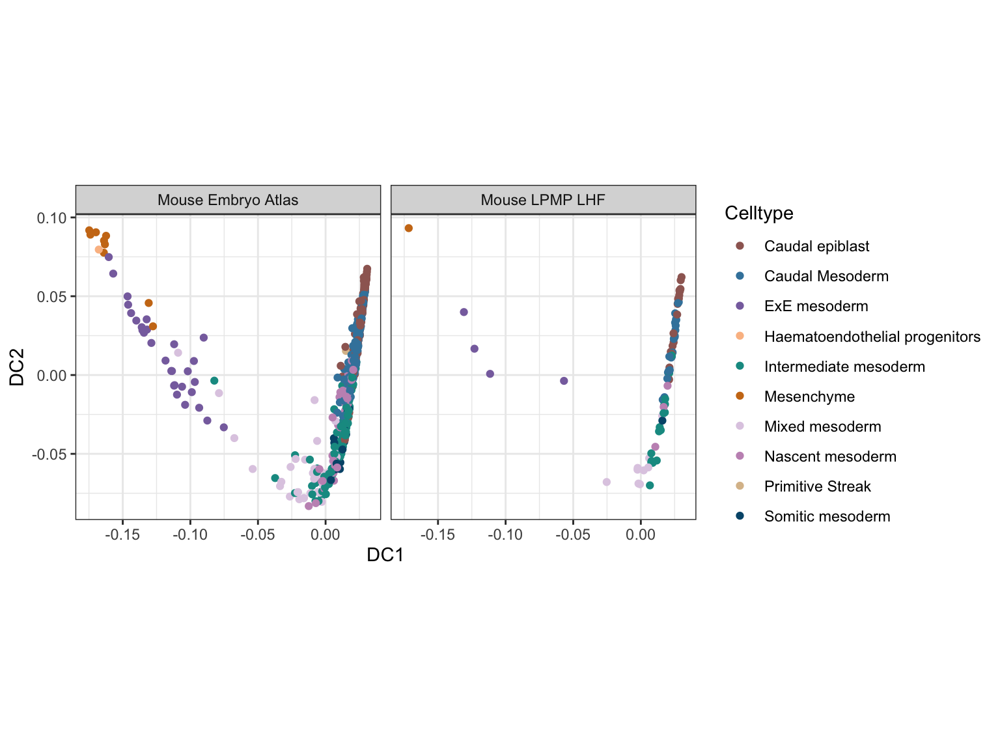
Function to compute the entropy of the expression profile within each cell:
whichNonZero <- function(x) {
x <- as(x, "SparseArraySeed")
z <- nzindex(x)
list(i = z[, 1], j = z[, 2], x = nzdata(x))
}
calculateEntropy <- function(x) {
n <- whichNonZero(counts(x))
p <- n$x / colSums(counts(x))[n$j]
e <- - p * log(p)
e <- by(e, INDICES = n$j, FUN = sum)
e <- as.vector(e)
}Calculate the entropy of the expression profile within each cell:
sce$entropy <- calculateEntropy(sce)Plot DiffusionMap of cells from reference and test data coloured by entropy:
ggcells(sce, aes(DiffusionMap.1, DiffusionMap.2, colour = entropy)) +
geom_point() +
scale_colour_viridis_c() +
labs(x = "DC1", y = "DC2") +
facet_wrap(~ source, labeller = labeller(source = source.labels)) +
theme_bw() + theme(aspect.ratio = 1)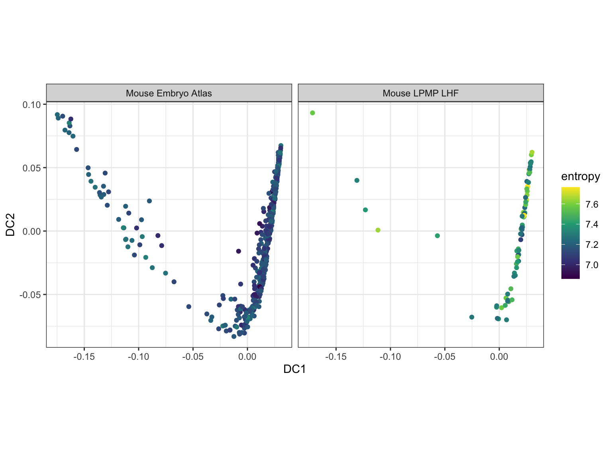
Plot DiffusionMap of cells from reference data coloured by entropy:
ggcells(sce[, sce$source == "reference"], aes(DiffusionMap.1, DiffusionMap.2, colour = entropy)) +
geom_point() +
scale_colour_viridis_c() +
labs(x = "DC1", y = "DC2") +
theme_bw() + theme(aspect.ratio = 1)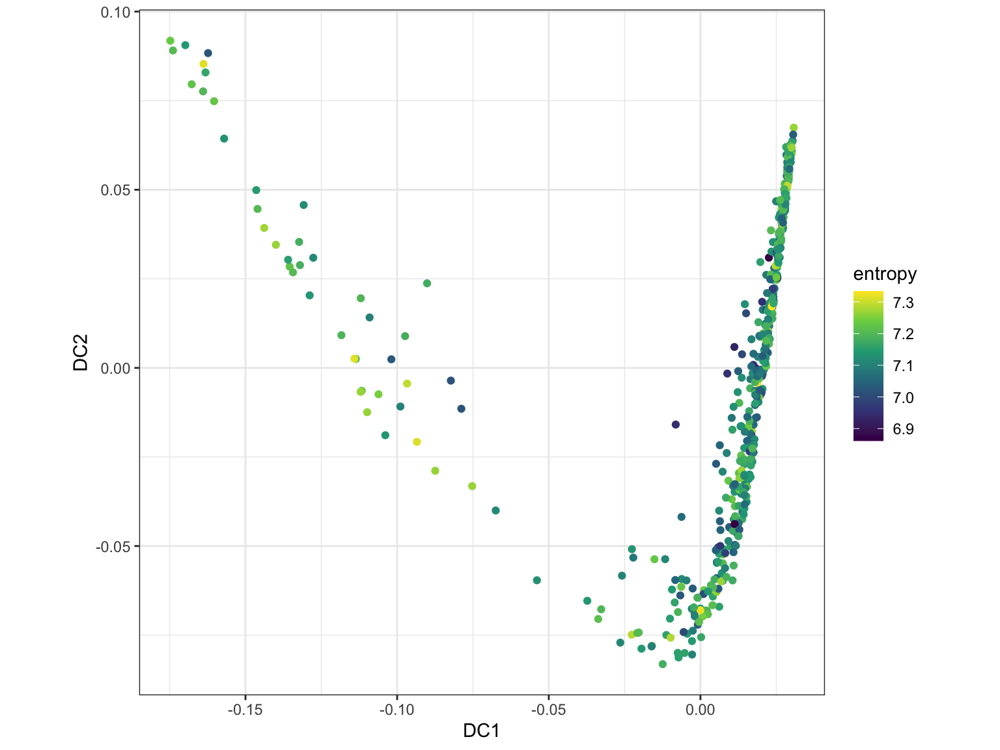
Plot DiffusionMap of cells from test data coloured by entropy:
ggcells(sce[, sce$source == "test"], aes(DiffusionMap.1, DiffusionMap.2, colour = entropy)) +
geom_point() +
scale_colour_viridis_c() +
labs(x = "DC1", y = "DC2") +
theme_bw() + theme(aspect.ratio = 1)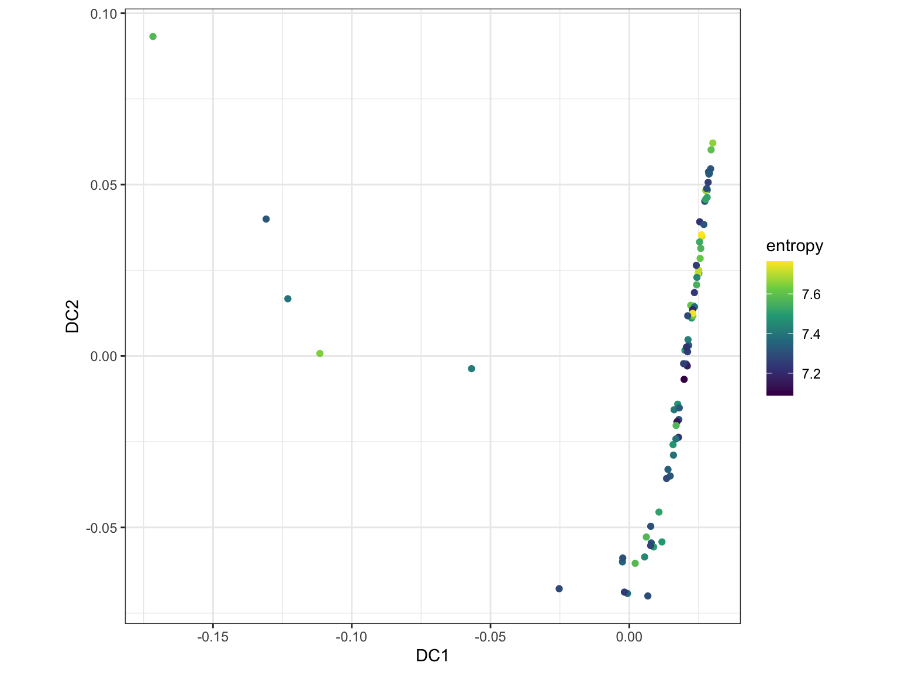
Plot entropy of cells from reference and test data:
ggcells(sce, aes(x = reorder_within(x = celltype, by = -entropy, within = stage, fun = median), y = entropy, colour = celltype)) +
geom_sina(seed = 42) +
scale_colour_manual(values = EmbryoCelltypeColours) +
facet_wrap(~ stage, scales = "free_x") +
labs(y = "Entropy", colour = "Celltype") +
theme_bw() +
theme(aspect.ratio = 1,
axis.title.x = element_blank(),
axis.text.x = element_blank(),
axis.ticks = element_blank())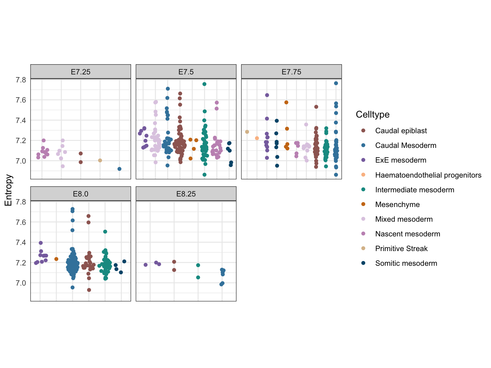
Plot entropy of cells from reference data:
ggcells(sce[, sce$source == "reference"], aes(x = reorder_within(x = celltype, by = -entropy, within = stage, fun = median), y = entropy, colour = celltype)) +
geom_sina(seed = 42) +
scale_colour_manual(values = EmbryoCelltypeColours) +
facet_wrap(~ stage, scales = "free_x") +
labs(y = "Entropy", colour = "Celltype") +
theme_bw() +
theme(aspect.ratio = 1,
axis.title.x = element_blank(),
axis.text.x = element_blank(),
axis.ticks = element_blank())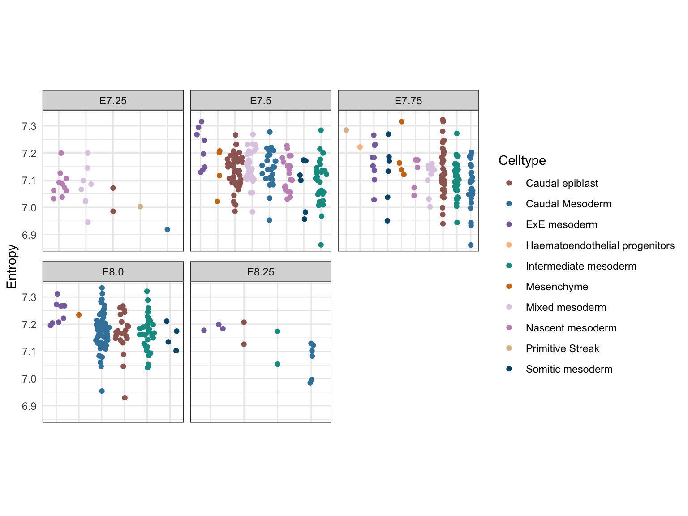
Plot entropy of cells from test data:
ggcells(sce[, sce$source == "test"], aes(x = reorder_within(x = celltype, by = -entropy, within = stage, fun = median), y = entropy, colour = celltype)) +
geom_sina(seed = 42) +
scale_colour_manual(values = EmbryoCelltypeColours) +
facet_wrap(~ stage, scales = "free_x") +
labs(y = "Entropy", colour = "Celltype") +
theme_bw() +
theme(aspect.ratio = 1,
axis.title.x = element_blank(),
axis.text.x = element_blank(),
axis.ticks = element_blank())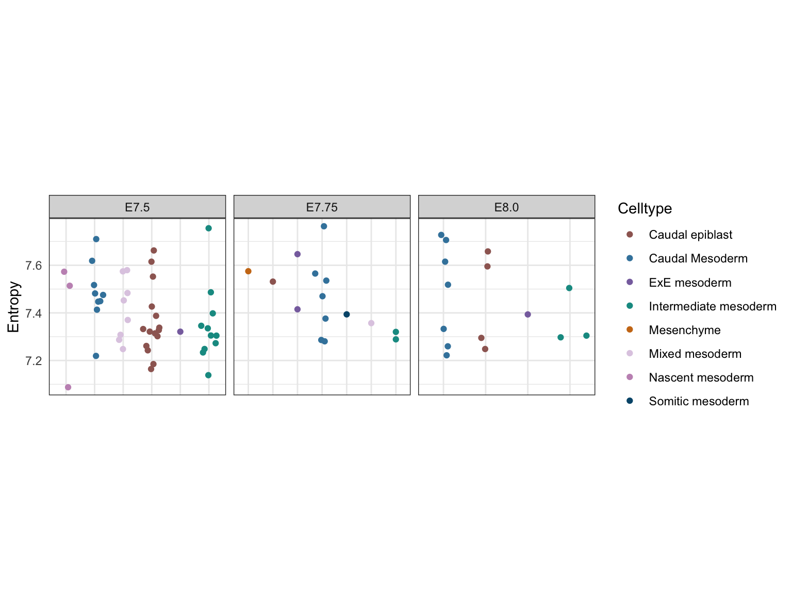
Function to calculate distance with MNN coordinates:
dist_clusters_diag <- function(X, w1, w2){
if(length(w1) != nrow(X) | length(w2) != nrow(X)){
stop("Reduced dimensional matrix and weights vector contain different
numbers of points.")
}
mu1 <- colWeightedMeans(X, w = w1)
mu2 <- colWeightedMeans(X, w = w2)
diff <- mu1 - mu2
if(sum(w1>0)==1){
s1 <- diag(ncol(X))
}else{
s1 <- diag(diag(cov.wt(X, wt = w1)$cov))
}
if(sum(w2>0)==1){
s2 <- diag(ncol(X))
}else{
s2 <- diag(diag(cov.wt(X, wt = w2)$cov))
}
return(as.numeric(t(diff) %*% solve(s1 + s2) %*% diff))
}Perform lineage inference with Slingshot:
set.seed(378891116)
sce <- slingshot(sce, reducedDim = "corrected", dist.fun = dist_clusters_diag)Reverse pseudotime to fit with known developmental trajectory:
sce$slingPseudotime_1 <- max(abs(sce$slingPseudotime_1)) + -sce$slingPseudotime_1Construct path data from trajectory curves:
sc1 <- embedCurves(sce, "DiffusionMap")
sc1 <- slingCurves(sc1)[[1]]
sc1 <- data.frame(sc1$s[sc1$ord, ])Plot DiffusionMap of cells coloured by pseudotime:
ggcells(sce, aes(DiffusionMap.1, DiffusionMap.2)) +
geom_point(aes(colour = slingPseudotime_1)) +
geom_path(data = sc1, aes(DC1, DC2), size = 0.8) +
scale_colour_viridis_c() +
labs(x = "DC1", y = "DC2", colour = "Pseudotime") +
theme_bw() +
theme(aspect.ratio = 1)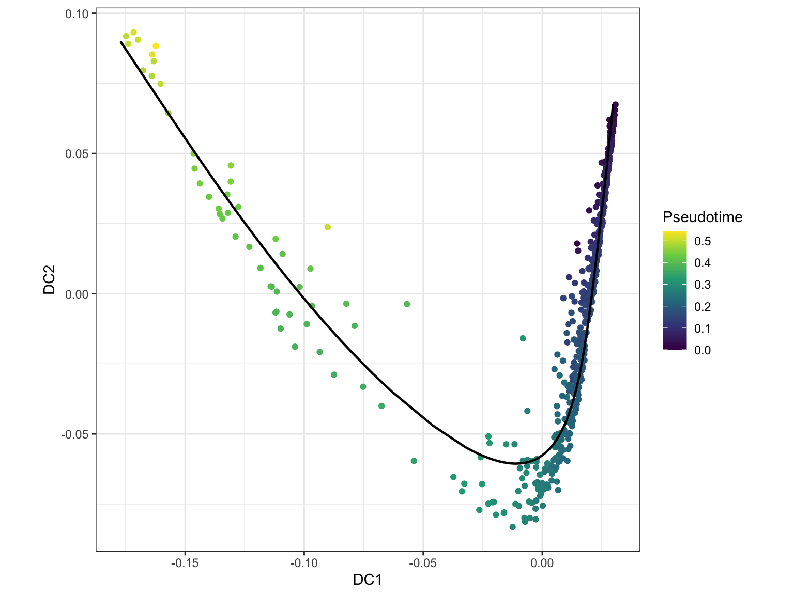
Plot pseudotime of cells coloured by celltype and facteted by data source:
ggcells(sce, aes(slingPseudotime_1, reorder(celltype, slingPseudotime_1, mean), colour = celltype)) +
geom_jitter(show.legend = FALSE) +
scale_colour_manual(values = EmbryoCelltypeColours) +
facet_wrap(~ source, labeller = labeller(source = source.labels)) +
labs(x = "Pseudotime", y = "Celltype", colour = "Celltype") +
theme_bw() + theme(aspect.ratio = 1)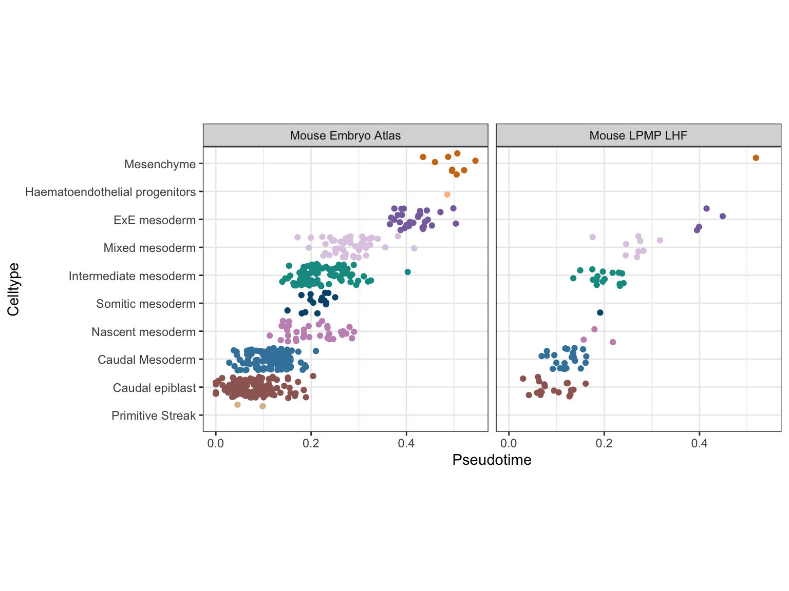
Fit the NB-GAM model with batch effect design matrix on highly variable genes:
set.seed(430396281)
mod <- model.matrix(~ 0 + source, colData(sce))
colnames(mod) <- c("reference", "test")
idx <- which(rowData(sce)$gene_id %in% metadata(sce)$getTopHVGs)
fit <- fitGAM(counts = counts(sce), sds = SlingshotDataSet(sce), U = mod, genes = idx)Test whether average gene expression is associated with pseudotime:
res <- associationTest(fit)
res$FDR <- p.adjust(res$pvalue, method = "fdr")
res$symbol <- rowData(sce)$gene_name[match(rownames(res), rowData(sce)$gene_id)]
res <- subset(res, FDR < 0.05)
res <- res[order(res$pvalue), ]Create table of associationTest results:
knitr::knit_print(DT::datatable(res))Function to plot expression of genes associated with pseudotime:
plotPseudotime <- function(object, features) {
colnames(object) <- paste("cell", seq_len(ncol(object)), sep = "-")
object <- object[features, order(object$slingPseudotime_1)]
x <- assay(object, "reconstructed")
rownames(x) <- rowData(object)$gene_name
M <- rowMeans(x, na.rm = TRUE)
DF <- ncol(x) - 1L
IsNA <- is.na(x)
if (any(IsNA)) {
mode(IsNA) <- "integer"
DF <- DF - rowSums(IsNA)
DF[DF == 0L] <- 1L
}
x <- x - M
V <- rowSums(x^2L, na.rm = TRUE) / DF
x <- x / sqrt(V + 0.01)
pheatmap.cluster_rows <- hclust(dist(x, method = "euclidean"), method = "complete")
pheatmap.color <- colorRampPalette(rev(brewer.pal(n = 5, name = "RdBu")))(100)
l <- max(abs(x))
pheatmap.breaks <- seq(-l, l, length.out = 101)
pheatmap.annotation_col <- data.frame(
Celltype = object$celltype,
Stage = object$stage,
Source = object$source,
row.names = colnames(object))
pheatmap.annotation_colors = list(
Celltype = EmbryoCelltypeColours[names(EmbryoCelltypeColours) %in% object$celltype],
Stage = setNames(tableau_color_pal("Tableau 10")(5), sort(unique(sce$stage))),
Source = setNames(tableau_color_pal("Classic Green-Orange 6")(2), sort(unique(sce$source)))
)
pheatmap(
mat = x,
color = pheatmap.color,
breaks = pheatmap.breaks,
cluster_rows = pheatmap.cluster_rows,
cluster_cols = FALSE,
annotation_col = pheatmap.annotation_col,
annotation_colors = pheatmap.annotation_colors,
show_colnames = FALSE
)
}Plot expression of genes associated with pseudotime:
plotPseudotime(sce, head(rownames(res), n = 50))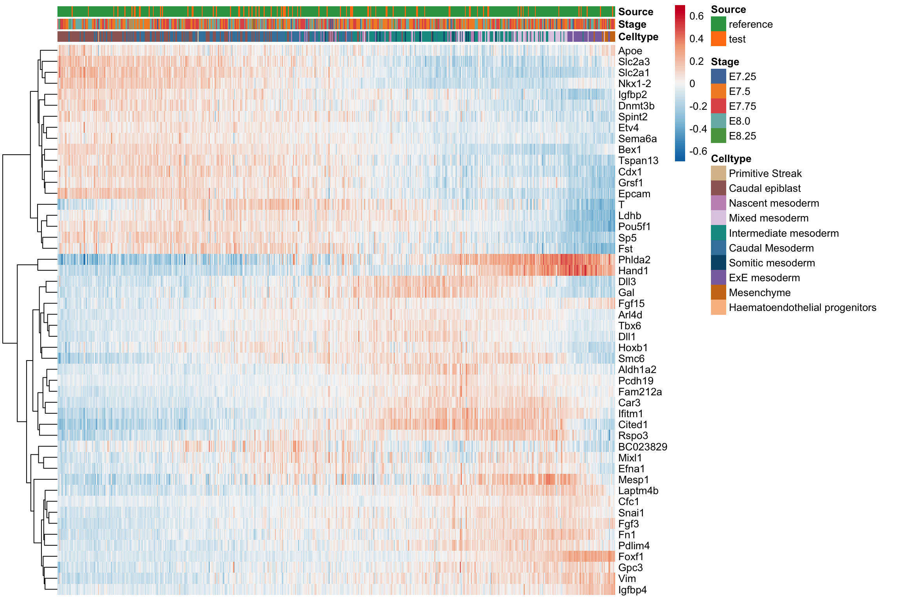
Save integrated experiment object to disk:
saveRDS(sce, file = "output/12-atlas-trajectory.rds")Print session information:
sessionInfo()R version 4.0.2 (2020-06-22)
Platform: x86_64-apple-darwin17.0 (64-bit)
Running under: macOS Catalina 10.15.6
Matrix products: default
BLAS: /Library/Frameworks/R.framework/Versions/4.0/Resources/lib/libRblas.dylib
LAPACK: /Library/Frameworks/R.framework/Versions/4.0/Resources/lib/libRlapack.dylib
locale:
[1] en_GB.UTF-8/en_GB.UTF-8/en_GB.UTF-8/C/en_GB.UTF-8/en_GB.UTF-8
attached base packages:
[1] parallel stats4 stats graphics grDevices utils datasets
[8] methods base
other attached packages:
[1] RColorBrewer_1.1-2 pheatmap_1.0.12
[3] ggthemes_4.2.0 ggforce_0.3.2
[5] tradeSeq_1.2.01 bigmemory_4.5.36
[7] slingshot_1.6.1 princurve_2.1.5
[9] scran_1.16.0 scater_1.16.2
[11] ggplot2_3.3.2 MouseGastrulationData_1.2.0
[13] SingleCellExperiment_1.10.1 SummarizedExperiment_1.18.2
[15] DelayedArray_0.14.1 matrixStats_0.57.0
[17] Biobase_2.48.0 GenomicRanges_1.40.0
[19] GenomeInfoDb_1.24.2 IRanges_2.22.2
[21] S4Vectors_0.26.1 BiocGenerics_0.34.0
[23] workflowr_1.6.2
loaded via a namespace (and not attached):
[1] rappdirs_0.3.1 pkgmaker_0.31.1
[3] tidyr_1.1.2 bit64_4.0.5
[5] knitr_1.30 irlba_2.3.3
[7] data.table_1.13.0 RCurl_1.98-1.2
[9] doParallel_1.0.15 generics_0.0.2
[11] RSQLite_2.2.1 RANN_2.6.1
[13] VGAM_1.1-3 combinat_0.0-8
[15] proxy_0.4-24 bit_4.0.4
[17] phylobase_0.8.10 xml2_1.3.2
[19] httpuv_1.5.4 assertthat_0.2.1
[21] viridis_0.5.1 xfun_0.18
[23] hms_0.5.3 evaluate_0.14
[25] promises_1.1.1 DEoptimR_1.0-8
[27] progress_1.2.2 dbplyr_1.4.4
[29] readxl_1.3.1 htmlwidgets_1.5.2
[31] igraph_1.2.5 DBI_1.1.0
[33] sparsesvd_0.2 purrr_0.3.4
[35] ellipsis_0.3.1 crosstalk_1.1.0.1
[37] RSpectra_0.16-0 dplyr_1.0.2
[39] backports_1.1.10 DDRTree_0.1.5
[41] annotate_1.66.0 gridBase_0.4-7
[43] locfdr_1.1-8 vctrs_0.3.4
[45] TTR_0.24.2 abind_1.4-5
[47] RcppEigen_0.3.3.7.0 withr_2.3.0
[49] robustbase_0.93-6 vcd_1.4-8
[51] xts_0.12.1 prettyunits_1.1.1
[53] softImpute_1.4 cluster_2.1.0
[55] ExperimentHub_1.14.2 ape_5.4-1
[57] lazyeval_0.2.2 laeken_0.5.1
[59] crayon_1.3.4 genefilter_1.70.0
[61] labeling_0.3 edgeR_3.30.3
[63] pkgconfig_2.0.3 slam_0.1-47
[65] tweenr_1.0.1 nlme_3.1-149
[67] vipor_0.4.5 nnet_7.3-14
[69] rlang_0.4.7 lifecycle_0.2.0
[71] registry_0.5-1 bigmemory.sri_0.1.3
[73] BiocFileCache_1.12.1 rsvd_1.0.3
[75] AnnotationHub_2.20.2 cellranger_1.1.0
[77] rprojroot_1.3-2 polyclip_1.10-0
[79] lmtest_0.9-38 RcppHNSW_0.3.0
[81] rngtools_1.5 Matrix_1.2-18
[83] carData_3.0-4 zoo_1.8-8
[85] boot_1.3-25 Rhdf5lib_1.10.1
[87] beeswarm_0.2.3 viridisLite_0.3.0
[89] knn.covertree_1.0 bitops_1.0-6
[91] rncl_0.8.4 blob_1.2.1
[93] DelayedMatrixStats_1.10.1 stringr_1.4.0
[95] zinbwave_1.10.1 scales_1.1.1
[97] hexbin_1.28.1 memoise_1.1.0
[99] magrittr_1.5 plyr_1.8.6
[101] howmany_0.3-1 bibtex_0.4.2.3
[103] zlibbioc_1.34.0 compiler_4.0.2
[105] HSMMSingleCell_1.8.0 dqrng_0.2.1
[107] pcaMethods_1.80.0 ade4_1.7-15
[109] XVector_0.28.0 pbapply_1.4-3
[111] ggplot.multistats_1.0.0 MASS_7.3-53
[113] mgcv_1.8-33 tidyselect_1.1.0
[115] stringi_1.5.3 forcats_0.5.0
[117] densityClust_0.3 yaml_2.2.1
[119] BiocSingular_1.4.0 locfit_1.5-9.4
[121] ggrepel_0.8.2 grid_4.0.2
[123] tools_4.0.2 rio_0.5.16
[125] rstudioapi_0.11 uuid_0.1-4
[127] monocle_2.16.0 foreach_1.5.0
[129] foreign_0.8-80 git2r_0.27.1
[131] RNeXML_2.4.5 gridExtra_2.3
[133] smoother_1.1 scatterplot3d_0.3-41
[135] farver_2.0.3 Rtsne_0.15
[137] digest_0.6.25 BiocManager_1.30.10
[139] FNN_1.1.3 shiny_1.5.0
[141] qlcMatrix_0.9.7 Rcpp_1.0.5
[143] car_3.0-10 BiocVersion_3.11.1
[145] later_1.1.0.1 httr_1.4.2
[147] AnnotationDbi_1.50.3 kernlab_0.9-29
[149] colorspace_1.4-1 ranger_0.12.1
[151] XML_3.99-0.5 fs_1.5.0
[153] clusterExperiment_2.8.0 splines_4.0.2
[155] statmod_1.4.34 sp_1.4-2
[157] xtable_1.8-4 jsonlite_1.7.1
[159] destiny_3.2.0 R6_2.4.1
[161] pillar_1.4.6 htmltools_0.5.0
[163] mime_0.9 NMF_0.23.0
[165] DT_0.15 glue_1.4.2
[167] fastmap_1.0.1 VIM_6.0.0
[169] BiocParallel_1.22.0 BiocNeighbors_1.6.0
[171] class_7.3-17 interactiveDisplayBase_1.26.3
[173] codetools_0.2-16 lattice_0.20-41
[175] tibble_3.0.3 curl_4.3
[177] ggbeeswarm_0.6.0 zip_2.1.1
[179] openxlsx_4.2.2 survival_3.2-7
[181] limma_3.44.3 rmarkdown_2.4
[183] docopt_0.7.1 fastICA_1.2-2
[185] munsell_0.5.0 e1071_1.7-3
[187] rhdf5_2.32.3 GenomeInfoDbData_1.2.3
[189] iterators_1.0.12 HDF5Array_1.16.1
[191] haven_2.3.1 reshape2_1.4.4
[193] gtable_0.3.0